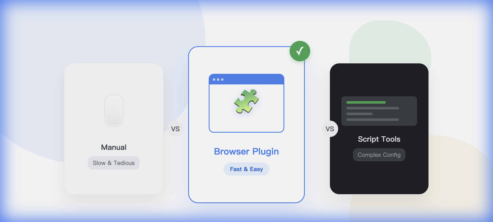

快速结论：哪种工具适合你？
- 官方手动导出：适合偶尔导出单个文件，无需安装任何软件。
- GitHub开源脚本：适合懂技术的开发者，需要配置Python/Node环境，完全免费。
- 浏览器扩展插件：最佳推荐。无需代码，一键安装，可视化操作，支持批量导出和团队空间，适合所有用户。
当你的石墨文档积累到几百上千份时，"如何把它们安全地备份到本地"就成了一个大问题。市面上虽然有一些解决方案，但良莠不齐。今天我们实测了三种主流的导出方式，看看哪种最适合你。
方式一：官方手动导出
这是最基础、最安全的方式，直接使用石墨文档网页版提供的"导出"功能。
优点
- 无需额外工具：任何浏览器都能直接用。
- 官方支持：格式转换最准确，兼容性最好。
缺点
- 效率极低：只能一个文件一个文件地点开、下载，无法批量操作。
- 容易遗漏：如果文件分散在几十个文件夹里，很容易点漏。
- 丢失目录结构：下载下来都是一个个散文件，还得自己手动重建文件夹归档。
方式二：开源脚本/命令行工具 (CLI)
在 GitHub 上，有不少热心的开发者分享了自己写的工具。以下是几个比较有代表性的项目：
1. shimo (by yangkghjh)
一个基于 Node.js 的批量导出工具，支持导出为 Word 和 Markdown。
2. ShimoExporter (by iccfish)
主打"一键备份"的个人项目，适合有 Python 基础的用户。
优点
- 批量处理：支持一次性导出大量文件。
- 开源免费：代码公开，没有隐藏收费。
缺点
- 配置复杂：例如 `yangkghjh/shimo` 需要你安装 Node.js 环境，并手动在浏览器控制台(F12)中抓取 Cookie 填入 `config.json` 文件。
- 维护不稳定：个人项目更新频率低，一旦石墨官方接口变动，工具可能随时失效。
- 安全隐患：需要将敏感的 Cookie/Token 明文保存在配置文件中，存在泄露风险。
方式三：浏览器扩展插件 (推荐)
这是目前体验最好的方案。通过 Chrome/Edge 扩展程序，直接在浏览器里运行，既有脚本的强大，又有图形界面的简单。
为什么推荐扩展程序？
因为它解决了"不仅要批量，还要简单"的问题。你不需要懂代码，只要会点鼠标就能用。
优点
- 零门槛：就像安装去广告插件一样简单，无需配置环境。
- 自动认证：直接复用你当前浏览器的登录状态，不需要手动抓包 Token。
- 保留目录结构：这是杀手级功能。它能把你的石墨文件夹结构完整地复刻到本地硬盘里。
- 支持团队空间：不仅能导出个人文档，还能导出公司/团队的空间文档。
- 全图片备份：文档里的图片会被自动下载并替换链接，离线也能看图。
缺点
- 需要安装浏览器插件（目前支持 Chrome, Edge, Firefox）。
核心功能对比表
| 功能特性 | 官方导出 | 脚本/CLI | 浏览器插件 |
|---|---|---|---|
| 批量导出 | 不支持 | 支持 | 支持 |
| 使用难度 | 简单 | 困难 (需代码基础) | 简单 (可视化) |
| 保留目录结构 | 无 | 部分支持 | 完美支持 |
| 手动获取Token | 不需要 | 需要 (繁琐) | 不需要 (自动) |
| 团队空间 | 支持 | 视脚本而定 | 支持 |
总结建议
如果你的需求是：
- 只要导出 1-2 个重要文件：请直接用官方导出，不用折腾任何工具。
- 你是极客，喜欢在服务器上定时跑任务：可以尝试去 GitHub 找找 Python 脚本。
- 你要备份整个文件夹、团队库，且不想写代码：浏览器插件是你的唯一选择。